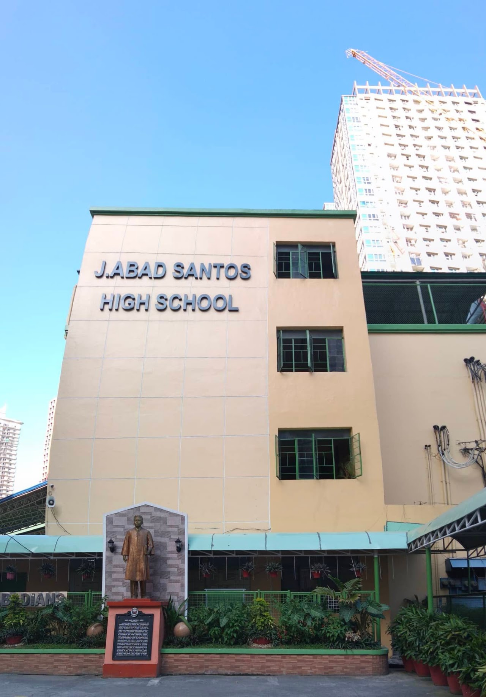
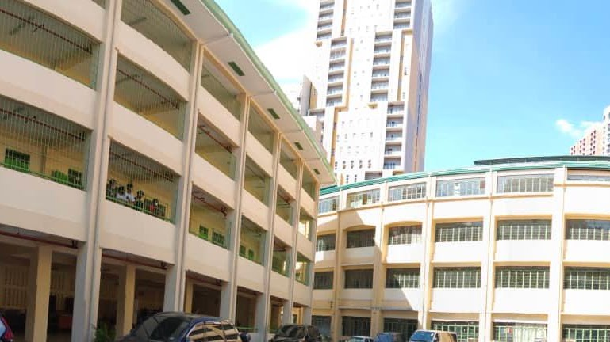
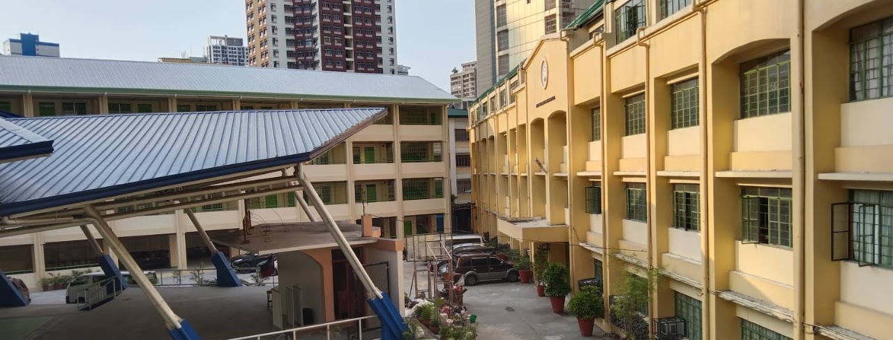

Senior High School

Jose Abad Santos High School (JASHS) is a public secondary school located in Binondo, Manila. It was established in 1947 and named in honor of Jose Abad Santos, a former Chief Justice of the Supreme Court of the Philippines. (Teacher jen's portfolio)
The school's roots trace back to the years following the Second World War, when Arellano High School saw a surge of post-liberation students. To accommodate the growing enrollment, Arellano annexed additional units at the La Chambre Building on Reina Regente Street in Binondo. These annexes, known as the Meisic annex, would later become Jose Abad Santos High School in its own right. (https://en.wikipedia.org/wiki/Arellano_High_School)

The site the school occupies has a layered history of its own. The building had previously served other purposes first as a Japanese garrison during the war, and later as a Manila Police Department detention facility before being formally inaugurated as a school on October 25, 1947. Today, the campus sits on a lot bounded by Reina Regente, Felipe II, Meisic, and La Chambre Streets in the San Nicolas district of Manila. (https://batangtondo.wordpress.com/tag/jose-abad-santos-high-school/)

In the years since, JASHS has grown alongside the Philippine education system. The school is now Senior High-ready, offering both the Academic strand and the Technical-Vocational-Livelihood (TVL) strand to its students, and continues to operate under the Schools Division Office of Manila. (Ivan's Blog)